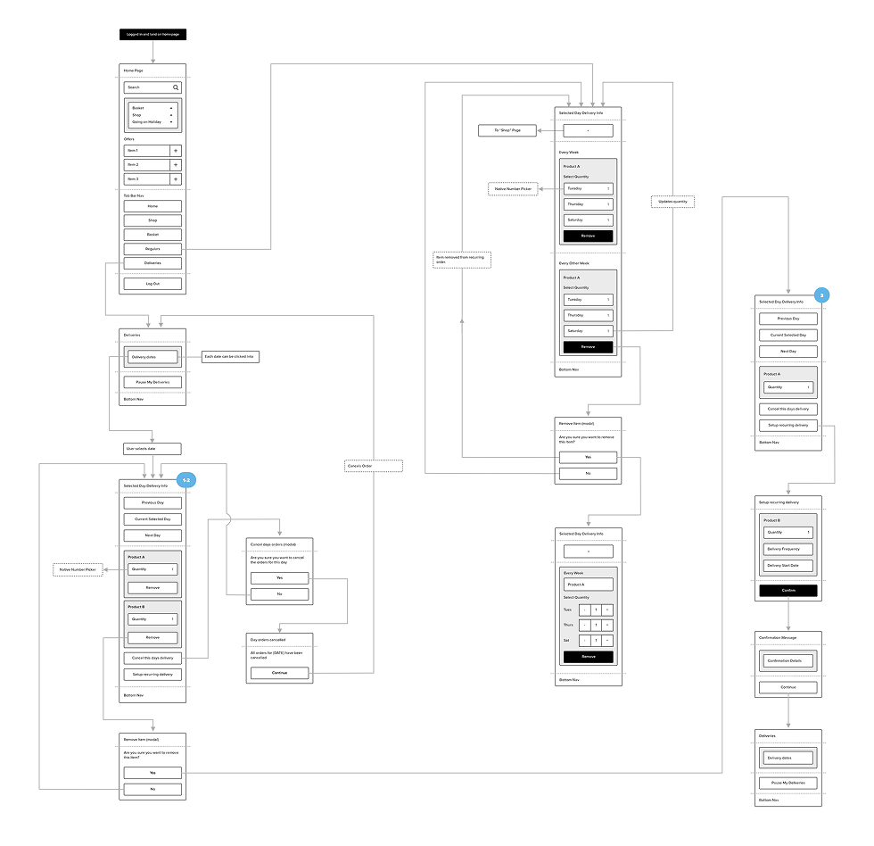
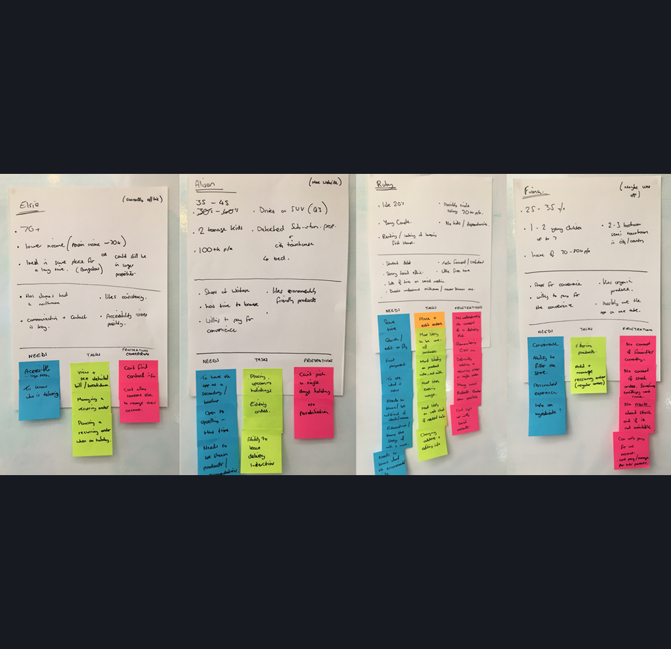

Grocery App Ordering
Milk & More is a leading UK grocery box delivery service. This project was part of a larger redesign of their mobile app. Having already built the app’s design system, my focus for this phase was to improve the order flow — reducing friction and making it clearer for users to place either repeat or one-off orders.

Product Design
Figma, Hotjar, Google Analytics, Lyssna
6 weeks
My Role
- Designed and iterated on sketches, wireframes, and UI concepts
- Creating of a new atomic design system
- Presented design work and rationale to the client team
- User testing on prototype the design
The Problem
The existing order flow was confusing and inefficient, causing errors and frustrating users. Key problems included poor differentiation between repeating and one-off orders, a slow product selection process, and a lack of control over subscription management (like pausing deliveries).
Research & Insights
I reviewed existing user personas and data, which highlighted confusion between the two ordering methods. Busy users found the multi-step “Add to Basket” process too slow, and excessive explanatory text made the experience feel overwhelming. A review of the current sign-up and checkout flow also revealed missing features such as the ability to edit orders and unclear visual feedback during key actions.


Ideation & Strategy
It became clear that the core issue was communication — users didn’t understand the difference between the two order types. Through the user flow i made sure the distinction was clear and well labled as you can see in the example attached. I also change the select options for the data selection to a calender as i sucpected having a familar interface would help users select the data. Apart from this i add the pause functionality and clean up the ux, e.g. adding in native pickers where reuqired. From there, I created mid- to high-fidelity wireframes to visualise and refine the new flow before moving into UI design.


Design & Testing
Using the design system I had previously developed, I created a polished UI and interactive prototype of the improved order flow. I introduced clearer visual hierarchy between recurring and one-time orders using consistent iconography and distinct color states. The new summary screen also reduced uncertainty by displaying next delivery and payment details upfront.
Due to budget constraints, testing was conducted internally, but results showed strong usability — the majority of testers completed their orders without confusion or errors. The calender change show an far faster selection time.


Outcome
The app’s rating improved from 4.1 to 4.3 on Google Play, with nearly 6,000 reviews. The customer support team reported fewer order-related queries and errors. Stakeholders noted clearer communication between order types and smoother overall flow.

What I Learnt
The project was a strong reminder of how listening to user frustrations directly translates into better experiences.